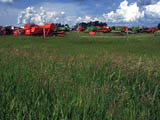

|
|
|
|
Agriculture Today |

|
Agriculture History Activity The following activities are designed to help you understand what life was like, to a farmer, in the early years of the 1900's. Try some or try all of the tasks. These are ideas that are taken from the Agriculture Saskatchewan series by Saskatchewan Education. |
Activity 1
Explore the agricultural history of your area of the province.
As a class, brainstorm some research options. Some suggestions
may be: local museums, local inhabitants, local history books
and the Saskatchewan Historical Society. Brainstorm some questions
to answer such as:
- Who were the first settlers?
- Why did they leave their homes?
- Why did they choose to settle in your area?
- How large were the farms?
- Where and when did the first settlers locate?
- How were the names of neighbouring towns and villages chosen?
- How would early settlers feel when they first came to live here?
- Did any people leave? Why?
- Why did those who stayed decide to remain?
Activity 2
Early settlers often created their own entertainment. Share ideas of what types of entertainment
settlers created. Jug bands, string bands and homemade instruments
were often a part of rural tradition. Work in pairs
to design and create your own musical instruments, using found
objects salvaged from the immediate environment. For example,
you may carve wood, weld iron, use rebar or cut copper pipes
to different lengths to make percussion instruments.
Activity 3
Reflect on life in Saskatchewan during the
1930s. Review the rules for brainstorming and then brainstorm
with the class to record some observations about weather, economic
and social conditions during this time. The following are some
examples.
- world economic depression
- drought
- low prices for produce
- unemployment dust storms
Activity 4
Participate in a focused imaging activity to visualize
life during the 1930s. Some suggested phrases
are given below.
Sit comfortably. Relax. Breathe in deeply through your nose, out
through your mouth. (Repeat three times). You are outside in a
farm yard. It is 1933 and very dry and windy. It is your birthday.
(Breathe in deeply, and out.) Last year you received some clothes
your mother had remade from some clothing sent from the East.
This year there is even less available. Listen to the wind, smell
the dust in the air. What are you thinking? How do you feel?
(This can continue ...)
Record in a journal writing format your reflections
as if you were living in southern Saskatchewan at that time.
Put yourself in a situation such as moving
from southern Saskatchewan to northern Saskatchewan, celebrating
Christmas or birthdays, watching a dust storm or knowing there
would be no crop and no money ... again.
Activity 5
The federal government encouraged the Indian peoples to establish
agriculture on their reserves. Metis people farmed as well. With a small group, investigate the history of Indian agriculture using the following subtopics as a guide.
Trace the early history of Indian and Metis agriculture in Saskatchewan.
- What encouragement and constraints were presented by the federal government to Indian people and by the provincial government to Metis people participating in agricultural activities?
- What is happening today in the area of Indian and Metis agriculture?
- What is the Saskatchewan Indian Agriculture Program (SIAP) and what impact has it had on the Aboriginal peoples in Saskatchewan?
- What effect could the land claims presently in dispute in Saskatchewan have on Saskatchewan agricultural operations?
Activity 6
Develop a historical cookbook. Talk
to your parents, grandparents and friends about old recipes that
have been used by your families over the years. Include all cultures.
Visit the senior housing and extended care facilities in your
area to talk to people there about what they used to eat. Include
their comments and reflections in the book. Publish the recipes
and other information gathered in cookbook form. You may want to form committees to carry out the following activities.
- Prepare and administer a budget.
- Develop artwork for the cover and inside pages.
- Sort the recipes and decide on the categories.
- Proofread recipes.
- Develop a marketing strategy if the book is used as a school fundraising project.
Activity 7
Bring any items to school that have been used in the past by your families or friends. Find out the name of the item, how it was used, when it was used and what we use today that accomplishes the same task. A comparison of efficiencies of the present and former items may be interesting. These items could be displayed in an attractive manner with labelled cards outlining the information you have found. Part of the display could be a background mural created by students on large sheets of paper. This mural could trace the history of Saskatchewan development, including some written commentary about the items displayed or about what was occurring economically and socially in Saskatchewan during the years depicted in the mural. Some research into Saskatchewan history will be required prior to this activity.
Activity 8
Early settlers coming west often used oxen to transport their
possessions. Do research in your school resource
centre to discover why oxen were used instead of horses and how
long it would take the settlers to travel west. Establish a probable starting point and use the area in which
you live as the ending point. You may discover some of these
facts.
- Settlers travelled in early spring at a rate of 27 kilometres per day if they used oxen and 45 kilometres per day if they used horses.
- Oxen could carry 225 kilograms to 350 kilograms in carts; horses could carry 680 kilograms.
- Many settlers used oxen instead of horses.
- Oxen were slower and more difficult to handle but they could live off the land. Horses need grain and grass to stay healthy.
- Oxen were cheaper than horses.
- Oxen did not depreciate with age as horses did.
- Ox beef was tough but well flavoured and a good source of protein.
- Horses were viewed as the cadillac of draught animals
The activity could be completed by comparing the horse and ox to the tractor.
Activity 9
Work in groups of three or four to research
the five Indian nations in what is now Saskatchewan and their
early agricultural practices. The five Indian nations are Cree,
Nakota (Assiniboine), Dakota (Sioux), Dene (Chipeweyan) and Anishinabeg
(Saulteaux). Discuss available resources for the project with
the teacher librarian prior to the assignment. Use one period
to research, one to prepare the assignment and one to report to
the class. Some questions that could be discussed are:
- Which Indian nations lived where?
- What was their food?
- How was this food obtained? What differences in lifestyle then made this possible?
- Was agriculture a part of their lives?
- Why or why not?
- How would a nomadic lifestyle differ from the lifestyle of a stable agricultural settlement?
- Did changes occur after explorers and fur traders arrived here?
- Are there advantages to being a farmer of Indian heritage? Are there disadvantages? Support your answer. What if this way of life existed today?
Read the background information that follows before beginning this activity.
Background Information: History of Agriculture in Saskatchewan
During the 1870s the plains Indian peoples realized that the buffalo
herds were dwindling and other game would soon be depleted. When
the federal government offered reserve lands in treaties and promised
to create reserve farms with livestock, technology and educational
support, many Indian bands accepted. In order to encourage Indian
bands toward successful agricultural operations, amendments were
made to the Indian Act. One amendment forbade participating in
the Sun Dance because it took the Indian peoples away from agricultural
activities at what the government considered to be a crucial time.
The government, however, soon realized that implementing their
agricultural treaty provisions and promises would be much more
expensive than allowing the Indian peoples to continue to depend
upon hunting and trapping on reserve lands. According to John
Tobias, the government did not begin to implement the reserve
and farming provisions of the treaty in more than a token way
until 1879. And, not all promised farm animals and equipment were
distributed at that time. By this time Indian peoples were facing
starvation, with their early attempts at farming having little
effect on the hunger crisis in their lives.
Indian peoples protested and requested that the government provide
the reserves with the promised support. They wanted skills, tools
and training in areas such as farming, carpentering and blacksmithing
in order to help their reserves become self -sufficient.
Agricultural activities on the reserve were restrained by the
Indian Act. For example, from 1885 until 1935 Indian Agents and
commissioners used a permit and pass system to restrict the movements
of Indian peoples off the reserves. This system often determined
which crops and livestock could be grown and how production could
be marketed.
Other areas of control existed that limited the development of
Indian reserve agriculture. Band, and even individual, private
funds were restricted. This hampered the purchase of items such
as new agricultural equipment. As a result, the original reserve
communal farms broke up and crop production fell dramatically.
Sources:
Barron, Laurie F. (1988). The Indian Pass System in the Canadian
West, 18821935. Prairie Forum, 13 (11). Tobias, John L. (1975).
Indian Reserves in Western Canada: Indian Homelands or Devices
for Assimilation.
|
|
|